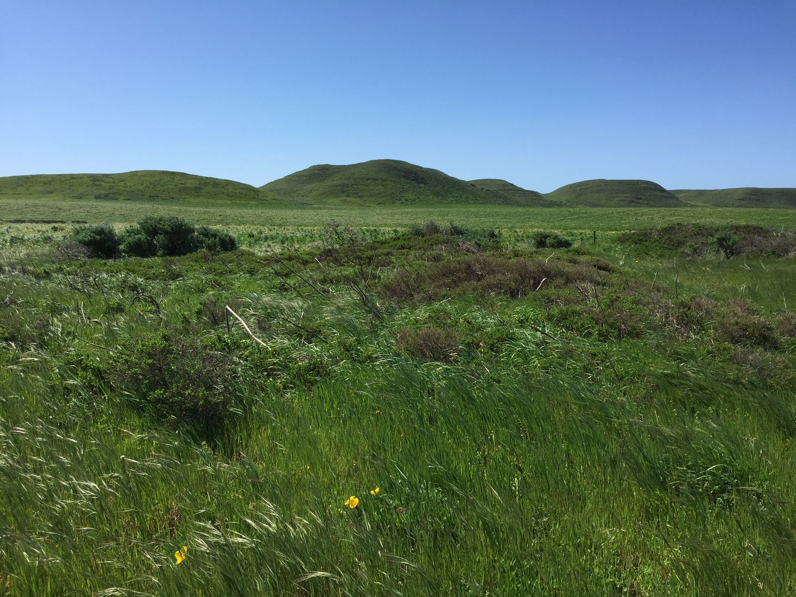
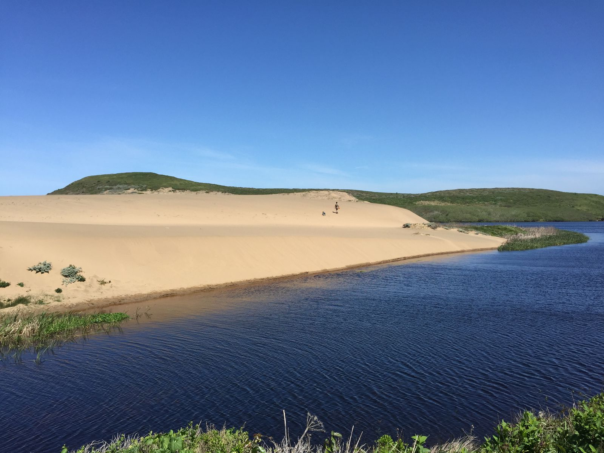
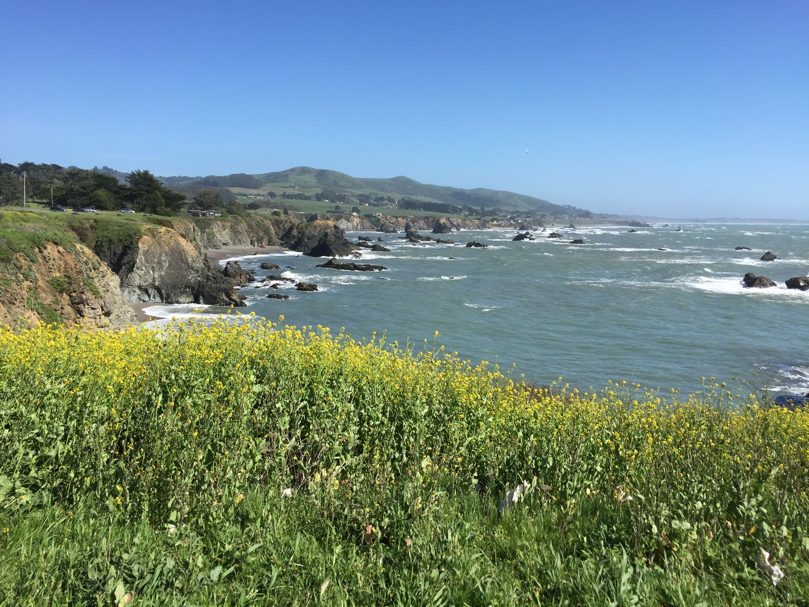
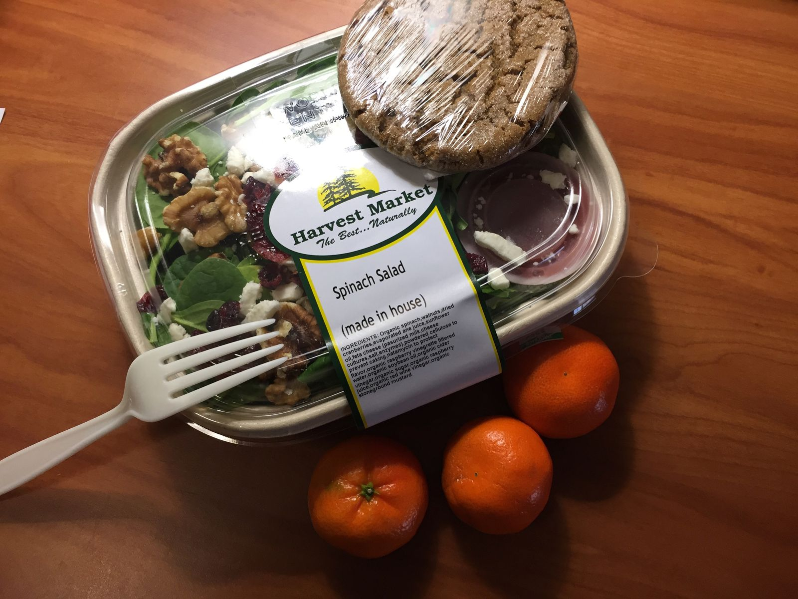
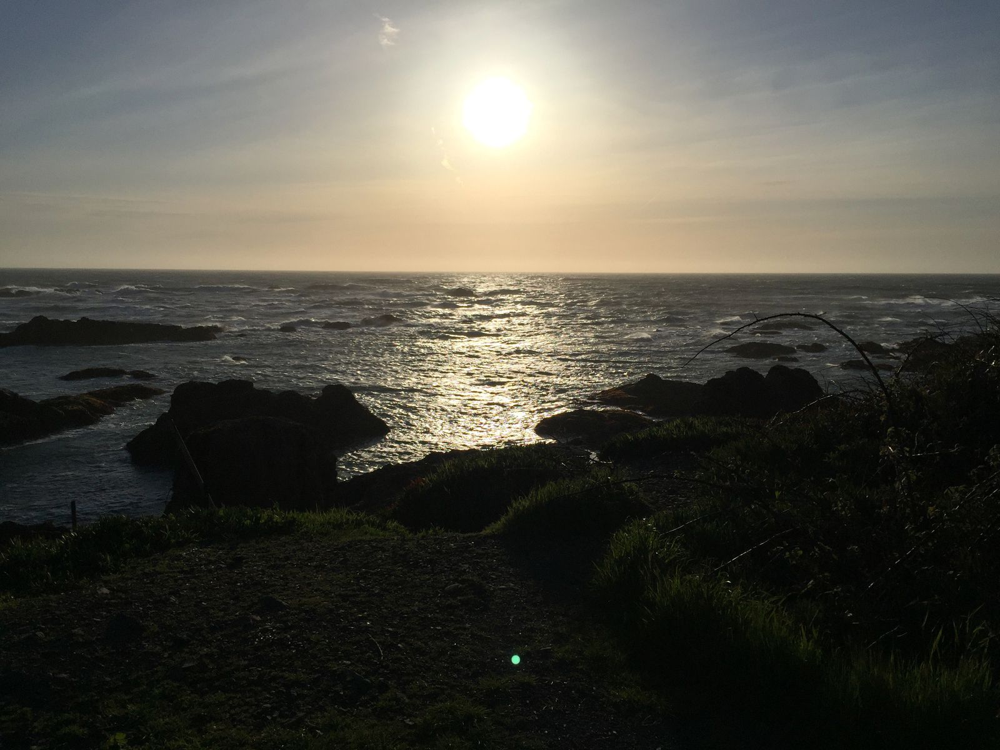
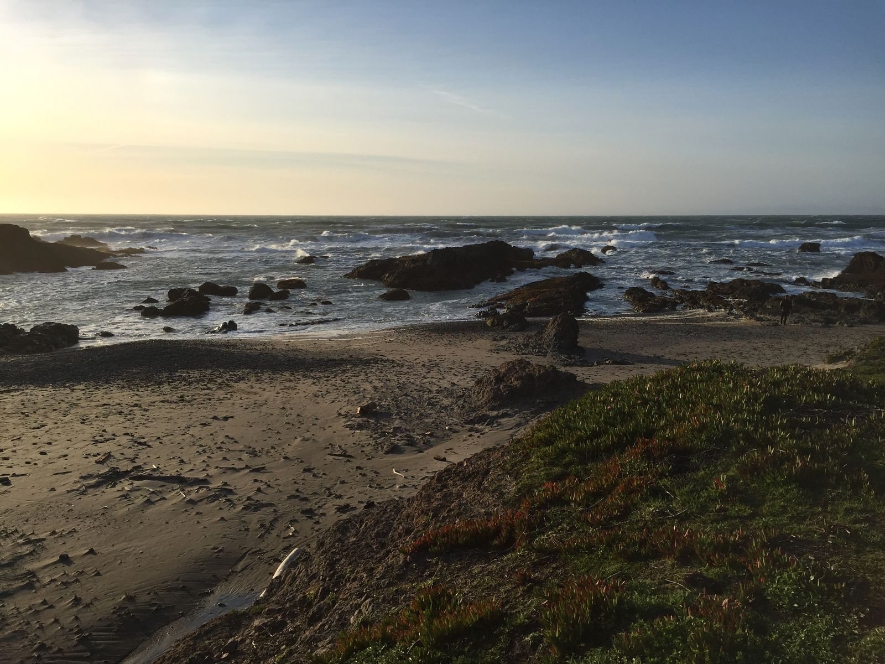

Back on the Road
I spent much of today on the road, back on the 1 northbound. I departed Oakland shortly after 8 and immediately ran into massive traffic getting over the bridge into Marin County. Construction of some sort added about 30 minutes to what should have been just a few. After stopping by Starbucks for breakfast and REI for trekking poles, I made it to Reyes Point just before noon. It was pretty chilly, having dropped just below 60ºF with strong winds.
The Abbotts Lagoon Trail hike was more of a walk, with roughly three miles taking roughly an hour and a half. I didn't see many animals or flowers, but I did see lots of sand dunes and reasonably large waves on the ocean side. At the start of the trail, I spotted a snake just before it spotted me. It scampered off quickly. I saw several small birds that weren't afraid of people. There was a heron (I think) that was very non-photogenic. I didn't see any Snowy Plovers despite much of the area being fenced off for their nesting.


For lunch, I stopped by Side Street Kitchen in the town of Point Reyes Station for a delightful meal. Usually I don't like vegetarian sandwiches as a concept—sandwiches generally are a vessel for eating meat protein—but this one was an exception. The Mt. Tam Baguette had a brie cheese from the creamery next door, honey crisp apples, fancy mustard, arugula, and melted leeks. It was very good.
After departing from Point Reyes Station, I was out of civilization for a long while. I had no cell service and passed by maybe five towns with populations ranges from 50 to 500. Basically, I just saw five gas stations, five grocery markets, and five restaurants from Point Reyes to Fort Bragg. I did stop by Bodega Bay for a quick ice cream, which was the worst ice cream of my trip, but it was still decent.

After about four hours of driving windy coastal roads, I made it to Fort Bragg, where there were Starbucks, multiple gas stations, multiple restaurants, shopping centers, all the signs of a decent sized town. It's just after 8pm now and I'm in a hotel room eating a grocery store salad. It feels good not to eat at a restaurant for once.

Tomorrow I'm planning to head north to Redwood National Park. I was so excited to hike some of the trails there until I saw the weather forecast: 100% chance of rain. So instead I may spend much of the day in Eureka, visiting a craft chocolate shop that a co-worker described as the "best chocolate ever". Thankfully, I don't need to be out of the Redwood National Park area until Friday afternoon, so I should be able to get in a hike Friday morning before passing into Oregon.

